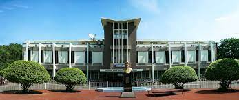
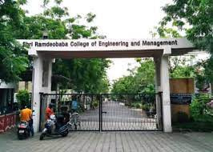
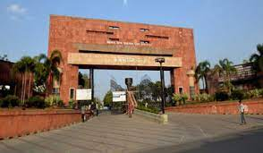

Visvesvaraya National Institute of Technology Visvesvaraya Regional College of Engineering, Nagpur (VRCE) is a public technical university located in the central Indian city of Nagpur, Maharashtra. Established in 1960, the institute is among 31 National Institutes of Technology.
Shri Ramdeobaba College of Engineering and Management, formerly Shri Ramdeobaba Kamla Nehru Engineering College, is a college in Nagpur, Maharashtra, India. It is an ISO 9001:2015 certified institution and NAAC Accredited with an ‘A+’ grade. The college was established in 1984 by the Shri Ramdeobaba Sarvajanik Samiti trust.
Priyadarshini College of Engineering, the Premier College of the Sanstha with 32 years of Proven Track Record, endeavors to impart academic excellence through promoting technology, scientific thinking, and Corporate Social Responsibility. Priyadarshini College of Engineering has been awarded an A+ grade status with CGPA 3.31 by NAAC for 5 years up to 27.03.2024. The institute has successfully received accreditation for four of its departments, namely Civil Engineering, Mechanical Engineering, Electronics & Telecommunication Engineering, and Electrical Engineering, for a period of 3 years, up to the year 2023-24, i.e.upto, 30-06-2024 by the National Board of Accreditation (NBA), New Delhi.
